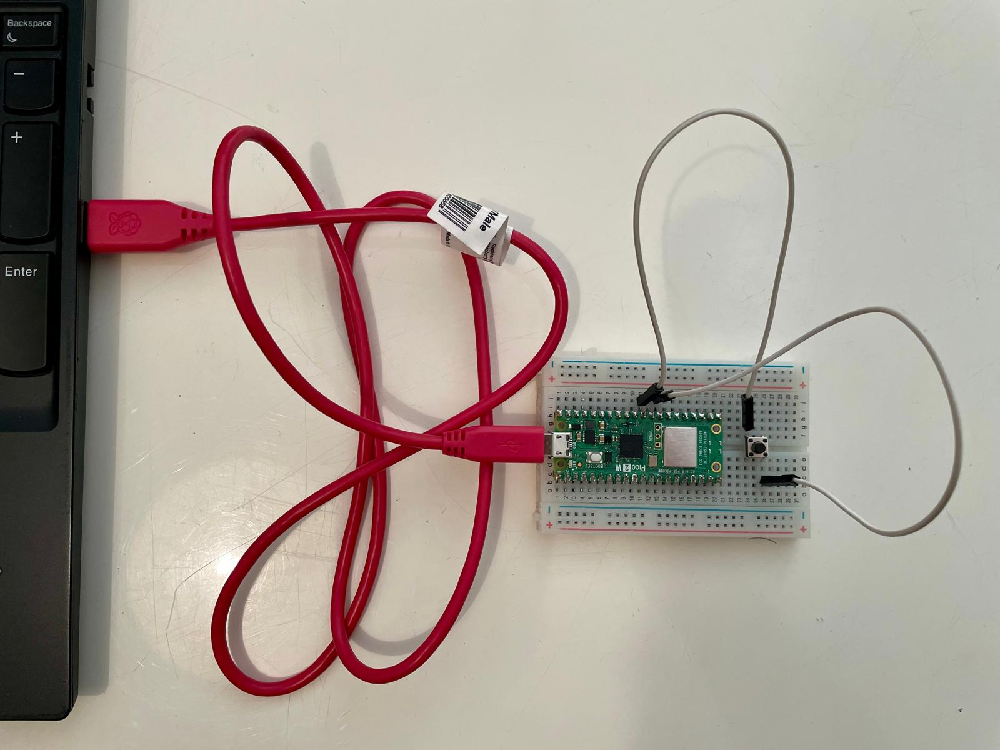

Bachelorarbeit: Effizienzanalyse von Post-Quanten-Schlüsselkapselungsverfahren auf dem IoT-Mikrocontroller RP2350

Im Rahmen meines B.Sc.-Studiums Informatik an der Fernuniversität in Hagen (04/2022 – voraus. 10/2026, Schwerpunkt Cybersecurity) habe ich meine Bachelorarbeit dem Thema Post-Quanten-Kryptografie auf dem IoT-Mikrocontroller RP2350 gewidmet. Die Arbeit wurde mit der Note 1,3 bewertet.
Motivation
Quantencomputer gefährden langfristig die Sicherheit aktueller asymmetrischer kryptografischer Verfahren. Daher ist der Einsatz von Post-Quanten-Kryptografie (PQC) erforderlich. Da IoT-Systeme weit verbreitet sind und gleichzeitig nur begrenzte Rechenleistung, Speicher- und Energieressourcen aufweisen, ist die Evaluierung von PQC-Verfahren auf solchen Plattformen von besonderer Bedeutung.
Untersuchungsgegenstand
Die Arbeit untersucht die Effizienz der PQC-Schlüsselkapselungsverfahren (KEMs) ML-KEM und HQC auf den beiden CPU-Kernen Arm Cortex-M33 und RISC-V Hazard3 des IoT-Mikrocontrollers RP2350, der im Raspberry Pi Pico 2 W verbaut ist. Im Zentrum standen zwei Forschungsfragen:
- Wie unterscheiden sich ML-KEM und HQC hinsichtlich Laufzeit, Speicherbedarf und Energieverbrauch auf dem RP2350?
- Welchen Einfluss hat die Wahl des CPU-Kerns (Arm Cortex-M33 vs. RISC-V Hazard3) auf die Effizienz der Verfahren?
Methodik
Die Messungen wurden auf beiden CPU-Kernen auf derselben Hardware- und Implementierungsbasis durchgeführt. Laufzeit und Speicherbedarf wurden mit eigens in C implementierten Messmethoden erfasst, der Energieverbrauch mithilfe des Nordic Power Profiler Kit II gemessen.
Ergebnisse
ML-KEM erweist sich in allen betrachteten Metriken und über alle NIST-Sicherheitsstufen
hinweg als effizienter als HQC. Auf Arm Cortex-M33 und RISC-V Hazard3 lässt sich ML-KEM
dabei ähnlich effizient ausführen; bei der Schlüsselerzeugung von ML-KEM-768 und
ML-KEM-1024 bietet der Arm Cortex-M33 jedoch leichte Vorteile bei Laufzeit und
Energieverbrauch. HQC wiederum schneidet auf dem RISC-V Hazard3 bei Laufzeit und
Energieverbrauch besser ab, während der Speicherbedarf für .data auf dem
Arm Cortex-M33 geringer ausfällt als auf dem RISC-V Hazard3.